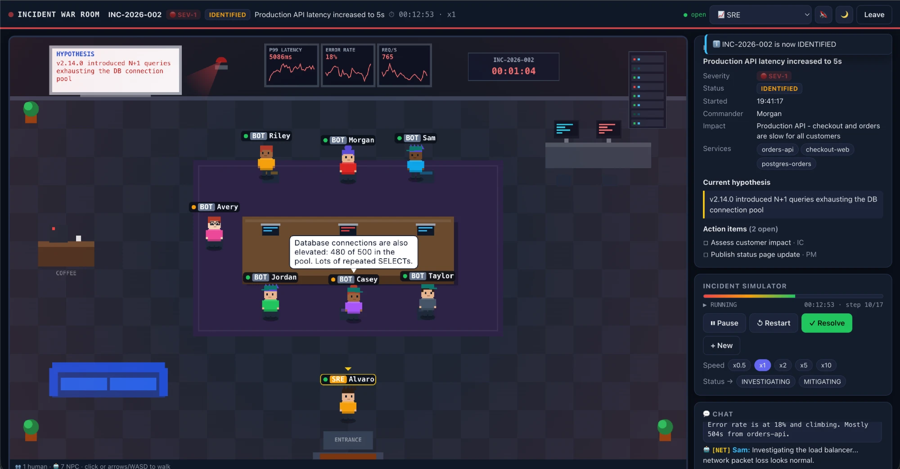

I built an incident war room inside my homelab

1. It started as a Kubernetes homelab
I wanted to study and practice on a cluster I could break and rebuild on my own terms, so I built one on my Mac: a real kubeadm setup with one control plane and two workers.
The lab grows in levels. First everything by hand, plain YAML, one manifest at a time. Then Kustomize and Helm, to stop copy-pasting. Then GitOps, with GitHub Actions running the CI and Argo CD keeping the cluster in sync with Git. On top of that, a Prometheus and Grafana stack I wrote myself, so anything running in the cluster gets watched.
2. An empty cluster is boring
At some point I had a cluster, pipelines and dashboards, and nothing worth running on them. Demo apps don't teach you much: they don't hold state, they don't break in interesting ways, and nobody cares when they go down.
I wanted a real app, reachable through an ingress, scraped by Prometheus, rolled out like any production service. And if I was going to build something anyway, it might as well be useful beyond the lab.
3. So I built a war room
My day job is reliability, and a big part of it is how teams respond when things go wrong. That part is hard to practice. You usually learn the incident process during a real incident, often at 3am, which is the worst possible time to learn anything.
So the app became Incident War Room. You open it in the browser, make a pixel-art avatar, pick a role (Incident Commander, SRE, Database, PM…) and walk into a 2D room. A scripted incident starts: latency climbs, the error rate spikes, NPC teammates fill the empty seats, throw out hypotheses and ask for updates. Your job is to take it from investigating all the way to resolved. You can pause it, speed it up, or run it again from the start.
It's a game, but the lessons are real: who is in command, who talks to the business, when you change the status and why. Most of incident response isn't debugging, it's coordination, and coordination gets better with practice.
4. Where the two worlds meet
The fun part is that the app closes the loop on the homelab. It ships through the same GitOps flow, sits behind Traefik, and shows up in Prometheus like any other service. Every deploy is Kubernetes practice, and every run of a scenario is incident practice. A fake SEV-1 runs on a cluster whose metrics are completely real.
What started as study turned into something I'd actually like to share: a light, playful way to rehearse the incident process before it counts. If you have a favorite incident you'd like to see turned into a scenario, I'd love to hear it.